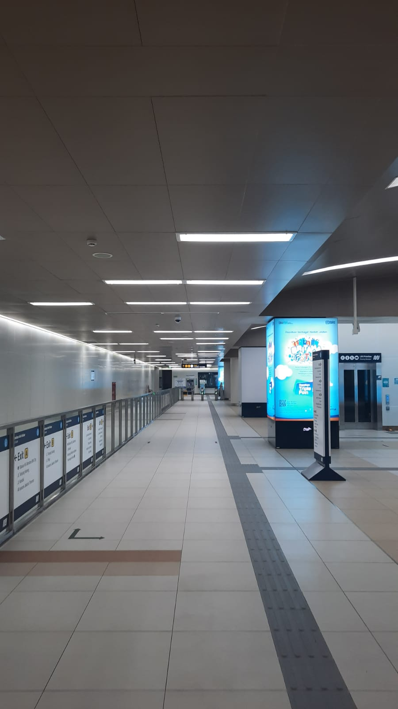
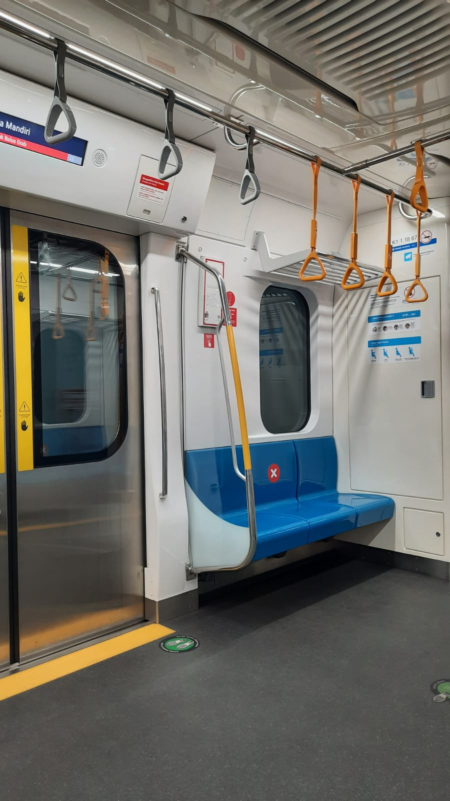
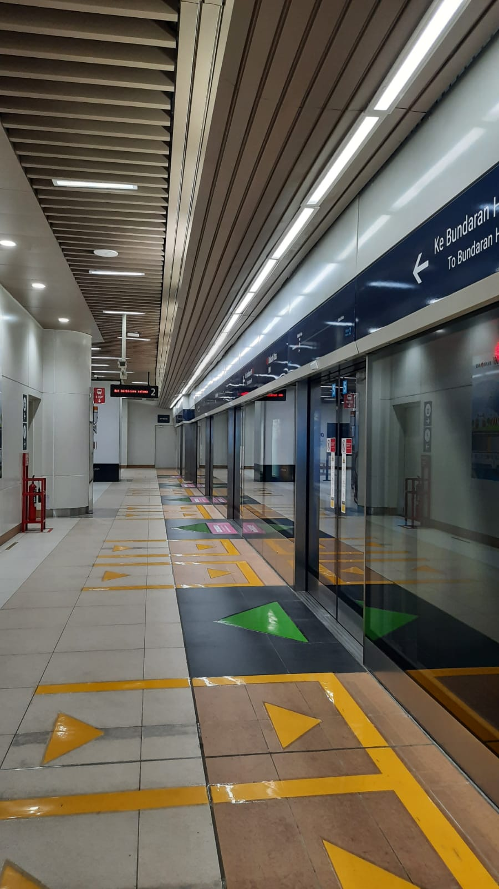

<!DOCTYPE html>
<html lang="en"></html>
<html>
    <script>
        alert("haiii")
        alert("link ini cuman gue kasi ke satu orang, jadi pasti dengan mas fathan kan?")
        alert("siap siap ya tarik nafas dulu")
        alert("hallo")
        alert("jangan kaget ya")
      </script>
<head>
<meta http-equiv="X-UA-Compatible" content="IE-edge">
<meta name="viewport" content="width=device-width, intial-scale=1.0">
<meta charset="uts-8">
<meta http-equiv="X-UA-Compatible" content="IE-edge">
<meta name="viewport" content="width=device-width, intial-scale=1.0">
<!--title--------------------------------------->
<title>Nabila's confession</title>
<!--link ke css--------------------------------->
<link rel="stylesheet" href="style.css"/>
<link rel="stylesheet" href="lightslider.css"/>
<!--link js------------------------------------->
<script src="js/JQuery3.3.1.js"></script>
<script src="js/lightslider.js"></script>
<!--icon----------------------------------------->
<link href="img/babyoda.jpeg"  rel="icon" />
<style>
    body{
        font-family: 'Courier New', Courier, monospace;
    }
</style>
</head>
<body>
    <style>
        body{
            font-family: 'Courier New', Courier, monospace;
        }
    </style>
    <section id="main">
        <!--showcase--------------------------->
        <!--heading------------->
        <h1 class="showcase-heading">JOHN MAYER - YOU'RE GONNA LIVE FOREVER IN ME</h1>
        <!--audio-------------------------------->
         <audio controls>
            <source src="lagu.mp3"/>
         </audio>
        <ul id="autoWidth" class="cs-hidden">
        
        <!--box-1------------------------------>
        <li class="item-a">
            <!--showcase-box------------------->
           <div class="showcase-box">
               
           </div>
        </li>
        <!--box-2--------------------------->
        <li class="item-b">
            <!--showcase-box------------------->
           <div class="showcase-box">
               
           </div>
               </li>
                <!--box-3--------------------------->
            <li class="item-c">
                <!--showcase-box------------------->
               <div class="showcase-box">
                   
               </div>
                   </li>
                </ul> 
    <div>
        <p>
          ayo nyalain dulu audionya gue maksa !! wkwk
          hey.. i cried while im listening "john mayer- you're gonna live forever in me" tonight and decided to writing down whats inside my heart.
lemme write this in english bcs it was so cringy in indonesian 😖!
thank u so much for everything, onoy!
i enjoyed all my time i spent with youu!
dumb conversations, small talks, your youtube live, the pickup lines, the railway station photos, the small comforts u gave me, and so on.
have i told u lately that im grateful to have u as my crush?
i knew i fell on the right person.
chin up and continously being confident, noy!
you are an amazing and great guy.
i can see it and tell that youre the one. not a single seconds of my time i regret my love for someone like you. after about 5 years still holding my heart to you, now i started to felt sorry for myself for trying n working things up this hard just for you. it just i realize that it ain't working for us no matter what i do and how long ill wait(?).. (i still love you, moron. if you have already changing ur heart go tell me something bcs ill really appreciate that i know you know ahahah) i was wanted to do that just simply because i know ure such a good person and i know ure worth my fight. i see in my eyes that youre different from others but i know that u won't believe me, right? ahah🐊 im serious. because of that, i dont want to lose person like you on someone else's hugs. lets call me selfish. i know i do deserve that tho wkwk. yet i felt sorry for myself... for this unrequited love in years. idk how ill stop these chase anymore. maybe because i used to see u from far since we were in junior high school, right? i used to adore u from far, and suddenly my love for u already grew into something big that i guess it will be live forever in me. yea just like the title song im hearing right now. its cringe. yet sad. but its okay! ive learned so many new things bcs of you, and 'we can't always have what we want' is one of those. it's a beautiful grow for me, i guess. ppl tend to come into your life for a reason, right? and im sincerely grateful and enjoyed the times i spent with you. wanna me to tell u something tmi? i cried while im writing these ahahaha. 
good luck n have a good lifee, friend! im really sorry for all what i've done to you, youre such an amazing person and im sure you will meet someone prettier and a hundred thousand better than me as u deserved, kings! i still love you since today but i know deep down, i dont deserve you. i tried to, but i couldn't bcs i kno my life is a mess and u should just stay back n run away from me. i dont want to burden you. im broken and still trying my best to love myself again and surviving this whole damn world before loving someone else for my sake ahahah. i want to be loved too. ill find a man who will love me too as much as i love you like this someday, i hope. i always here when you want to reach or contact me! let's just meet and greet each other in a happy tone when time finally decided to let us meet again when we're older! ♡♡


[03-11-21] 
        </p>
    </div>  
            </section>
<!--footer------------------>
<footer>
    <p>makasih buat semuanya!</p>
    <p>dari mba bila buat mas fathan</p>
</footer>

    <!--slider-script---------------------->
    <script>
        $(document).ready(function() {
   $('#autoWidth,#autoWidth2').lightSlider({
       autoWidth:true,
       loop:true,
       onSliderLoad: function() {
           $('#autoWidth,#autoWidth2').removeClass('cS-hidden');
       } 
   });  
 });
   </script>
</body>
</html>

